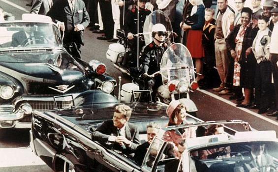
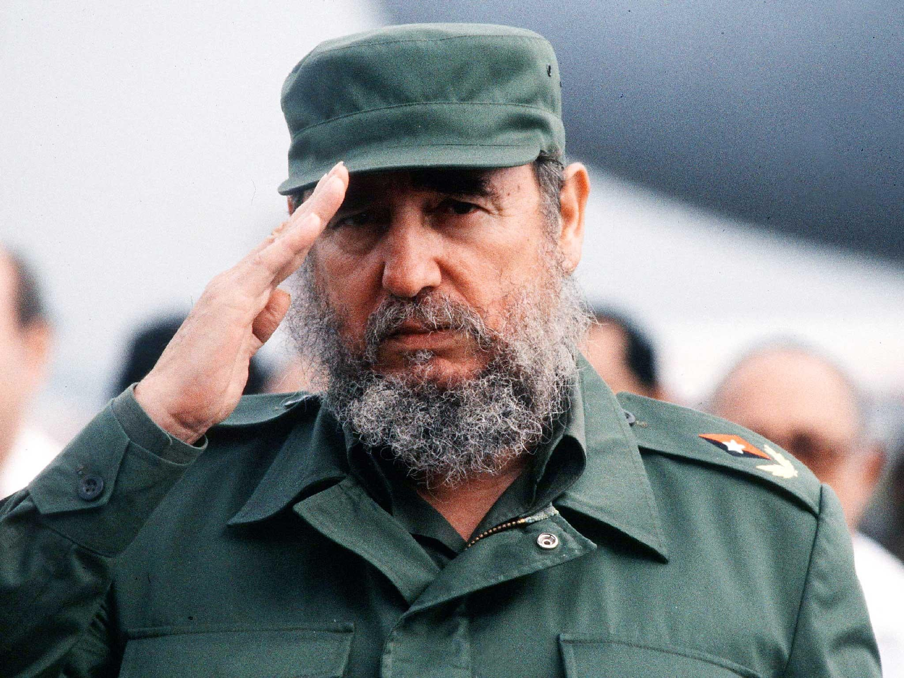

John Fitzgerald Kennedy (lahir di Brookline, Massachusetts, AS, 29 Mei 1917 – meninggal di Dallas, Texas, AS, 22 November 1963 pada umur 46 tahun), dikenal dengan panggilan "Jack" atau inisial JFK, adalah Presiden Amerika Serikat ke-35 yang menjabat sejak Januari 1961 sampai dibunuh bulan November 1963. Setelah menjalani dinas militer sebagai komandan Kapal Torpedo Motor PT-109 dan PT-59 saat Perang Dunia II di Pasifik Selatan, Kennedy menjadi perwakilan distrik kongres ke-11 Massachusetts di Dewan Perwakilan Rakyat Amerika Serikat sejak 1947 sampai 1953 dari Partai Demokrat. Setelah itu, ia menjabat di Senat Amerika Serikat sejak 1953 sampai 1960. Kennedy mengalahkan Wakil Presiden dan kandidat Republik Richard Nixon dalam pemilu presiden AS 1960. Pada usia 43 tahun, ia menjadi presiden termuda yang pernah menjabat,[2][a] presiden termuda kedua (setelah Theodore Roosevelt), dan presiden pertama yang lahir pada abad ke-20.[3] Sampai sekarang, Kennedy, seorang Katolik, adalah satu-satunya presiden non-Protestan dan satu-satunya presiden pemenang Hadiah Pulitzer. John F Kennedy merupakan salah satu presiden Amerika yang terkenal karena kematiannya akibat dibunuh. Hingga kini banyak juga yang menduga kematian presiden yang akrab dipanggil dengan sebutan ‘JFK’ atau ‘Jack’ ini penuh dengan konspirasi. Kematian Presiden John F. Kennedy atau JFK telah melahirkan sejumlah teori konspirasi yang bertahan selama berpuluh-puluh tahun menyusul kumpulan dokumen dirahasiakan pemerintah. Keputusan Presiden Donald Trump membuka dokumen pembunuhan JFK yang selama sekitar 50 tahun dirahasiakan, membuat banyak pihak berharap teori konspirasi segera berakhir.
Terdapat lebih dari 1 penembak
Laporan Parlemen Amerika Serikat menyimpulkan bahwa Lee Harvey Oswald bertindak sendiri dan tanpa bantuan untuk membunuh JFK. Namun berbeda dengan laporan itu, Senat mengatakan ada "probabilitas tinggi" bahwa dua orang bersenjata menembaki JFK.Setelahnya berbagai pakar dan kelompok penganut teori konspirasi kemudian menyatakan bahwa pembunuh JFK belum tentu Oswald, tapi malah seorang pria yang menembak di sepanjang rute iring-iringan mobil presiden AMerika Serikat itu. Salah satu teori yang paling populer adalah gagasan CIA atau orang-orang yang terkait dengan CIA terlibat dalam pembunuhan Kennedy. Beberapa teori menyebutkan orang yang berafiliasi dengan CIA melepaskan tembakan mematikan tersebut, sementara yang lainnya menyatakan bahwa CIA atau agen pemerintah lainnya mengetahui akan ada upaya untuk mengakhiri kehidupan JFK. Dan, dengan tidak adanya inisiatif untuk bertindak, menunjukan CIA terlibat dalam pembunuhan tersebut.Laporan parlemen juga mengatakan CIA tidak terlalu aktif dalam pengumpulan dan pembagian informasi baik sebelum dan sesudah pembunuhan. JFK tidak sendirian di Dallas. Ibu negara Jackie Kennedy ada di sisinya, serta Gubernur Demokrat John Connally.Gubernur juga tertembak saat JFK terbunuh, dan satu teori mengatakan bahwa Oswald bermaksud membunuh gubernur tersebut, bukan Kennedy.
Wartawan James Reston Jr. menggarisbawahi teori ini secara panjang lebar, mengatakan bahwa Oswald menyasar nama Connally, dan mencatat bahwa istri Oswald mengatakan bahwa Connally adalah sasarannya.Selama bertahun-tahun, teori-teori itu terus bertahan, dan pemerintah membuat beberapa dokumennya tetap tertutup dari publik. Kongres telah mengeluarkan undang-undang 25 tahun yang lalu yang mewajibkan pemerintah melepaskan semua dokumennya dan memberi ruang bagi sebuah lembaga untuk menyimpan rahasia informasi sensitif. Sesuai dengan undang-undang tersebut, Presiden Donald Trump mengeluarkan sebuah memo pada Kamis malam untuk membuka beberapa file. Namun, memo Trump hanya mengizinkan perilisan 2.800 dokumen pemerintah yang berkaitan dengan pembunuhan JFK , dari jumlah total yang berkisar sekitar jutaan dokumen. Harapannya, teori konspirasi akan berakhir dengan pembukaan dokumen rahasia tentang pembunuhan salah satu presiden yang paling dipuja Amerika.
Balas dendam Castro
Ketika Fidel Castro memimpin sebuah revolusi komunis di Kuba, Amerika Serikat di bawah kepemimpinan JFK memulai sebuah operasi yang dikenal sebagai Teluk Babi. Operasi di awal masa kepresidenannya dilakukan dalam usaha menggulingkan pemerintah Castro yang kemudian gagal. Setelah operasi Teluk Babi dan Krisis Rudal Kuba, Amerika Serikat terus merencanakan untuk membunuh Castro selama bertahun-tahun, termasuk mencoba meracuni cerutunya.Dengan motif potensial dan kecenderungan pandangan komunis Oswald, satu teori mengemukakan Castro memiliki andil dalam pembunuhan tersebut. Namun sebelum meninggal dunia, Castro telah membantah keterlibatannya dan menngatakan itu adalah kabar bohong yang buruk. Dalam dokumen yang diterbitkan, CIA menjelaskan bahwa Kuba tidak memiliki alasan untuk menjadi negara yang melakukan pembunuhan terhadap JFK, walaupun sebelumnya ditemukan adanya indikasi balas dendam setelah CIA melakukan percobaan pembunuhan kepada Kuba. "Komite tidak percaya Castro akan membunuh Presiden Kennedy, karena tindakan seperti itu, jika ditemukan, akan memberi alasan kepada Amerika Serikat untuk menghancurkan Kuba," demikian isi dokumen tersebut. Sebuah dokumen menjelaskan mengenai upaya CIA membunuh Fidel Castro. Terdapat beberapa skema untuk pembunuhan dan semuanya gagal ketika dijalankan. Pertama ketika CIA mengirim utusan seorang pengacara dari AS, James B. Donovan, untuk memberikan sebuah pakaian selam yang didalamnya telah dilapisi racun. Namun sayang aksi ini gagal setelah Donovan tidak jadi memberikan dengan alasan menjaga persahabatan dengan Castro. Kedua CIA akan menyiapkan peledak di sekitar laut Kuba , setelah diketahui bahwa Castro memiliki hobi diving. Namun sayangnya rencana tersebut gagal karena peledak yang disiapkan gagal diletakkan menginga tsempitnya terumbu karang dan tidak cukup untuk bom di dalamnya. Dengan usah Trump untuk membuka dokumen JFK menjadi pemicu dalam keterbukaan informasi, terutama informasi rahasia bersumber dari CIA yang selama ini belum terungkap